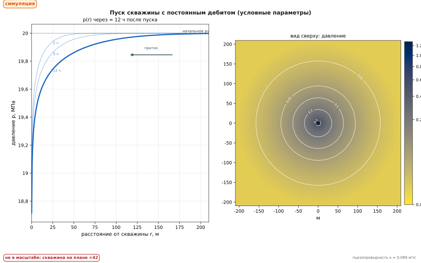

«Пусть в неограниченном горизонтальном пласте постоянной толщины $h$ имеется добывающая скважина «нулевого» радиуса (точечный сток).»
До пуска давление одинаково во всём пласте. Время отсчитывают от пуска. стр. 488
«Начальное пластовое давление во всем пласте одинаково и равно $p_{\mathrm{k}}$.»
«В момент времени $t = 0$ скважина пущена в эксплуатацию с постоянным объемным дебитом $Q_0$.»
После пуска объёмный дебит поддерживают постоянным. стр. 488
«В момент времени $t = 0$ скважина пущена в эксплуатацию с постоянным объемным дебитом $Q_0$.»

Воронка давления вокруг скважины в разные моменты при условных параметрах. Дебит постоянен, а возмущённая зона со временем расширяется.
Класс B · симуляция · не в масштабе: скважина на плане ×42 · нарисовано кодом · стр. 488
Что происходит
Образуется радиальный поток жидкости. По выводу автора, он неустановившийся. стр. 488
«В результате в пласте образуется неустановившийся плоскорадиальный поток упругой жидкости.»
Это плоскорадиальный поток: давление зависит от расстояния до оси и от времени. стр. 488
«Распределение давления в пласте (в любой его точке в любой момент времени) $p(r, t)$ определяется интегрированием уравнения (23.16), которое для радиального течения в цилиндрической системе координат имеет вид»
Граница возмущённой зоны со временем смещается. При больших временах её радиус стремится к бесконечности. стр. 488
«Второе условие показывает, что граница возмущенной зоны (т.е. значение радиуса, на котором давление равно контурному) перемещается с ростом времени и для больших времен стремится к бесконечности.»
«Второе условие показывает, что граница возмущенной зоны (т.е. значение радиуса, на котором давление равно контурному) перемещается с ростом времени и для больших времен стремится к бесконечности.»
Краевая задача
Давление в нужной точке и в нужный момент находят из уравнения в радиальной форме. стр. 488
Начальное условие: давление во всех точках равно контурному. стр. 488
«Первое условие означает, что до момента времени $t = 0$ во всем пласте давление было постоянным и равным контурному.»
На бесконечном удалении после пуска сохраняется контурное давление. стр. 488
«$$p(r, t) = p_{\mathrm{k}} \quad \text{при } t > 0 \text{ и } r \to \infty, \quad (23.41)$$»
Условие у начала координат фиксирует дебит, а не давление на скважине. Уравнение вместе с условиями называют краевой задачей. стр. 488
«Из третьего условия следует, что дебит скважины поддерживается постоянным.»
По шагам
Как поставить задачу
Запишите радиальное уравнение для давления. стр. 488
Задайте одинаковое начальное давление во всём пласте. стр. 488
Положите давление контурным при бесконечном удалении. стр. 488
Задайте постоянный расход у точечного стока. стр. 488
«В результате в пласте образуется неустановившийся плоскорадиальный поток упругой жидкости.»
Для нахождения давления в выбранный момент и в выбранной точке решают уравнение в радиальной форме. наблюдение
«Распределение давления в пласте (в любой его точке в любой момент времени) $p(r, t)$ определяется интегрированием уравнения (23.16), которое для радиального течения в цилиндрической системе координат имеет вид»
Начальное условие задаёт давление, равное контурному, во всех точках. наблюдение
«Первое условие означает, что до момента времени $t = 0$ во всем пласте давление было постоянным и равным контурному.»
Граница возмущённой зоны по описанию автора смещается с ростом времени. вывод
«Второе условие показывает, что граница возмущенной зоны (т.е. значение радиуса, на котором давление равно контурному) перемещается с ростом времени и для больших времен стремится к бесконечности.»
В пределе больших времён радиус возмущённой зоны по описанию автора стремится к бесконечности. вывод
«Второе условие показывает, что граница возмущенной зоны (т.е. значение радиуса, на котором давление равно контурному) перемещается с ростом времени и для больших времен стремится к бесконечности.»
Условие у начала координат фиксирует дебит, а не давление на скважине. вывод
«Из третьего условия следует, что дебит скважины поддерживается постоянным.»
На бесконечном удалении после пуска сохраняется контурное давление. допущение
«$$p(r, t) = p_{\mathrm{k}} \quad \text{при } t > 0 \text{ и } r \to \infty, \quad (23.41)$$»
Исходный текст урока
Стр. 488 · 5.2. Плоскорадиальный фильтрационный поток упругой жидкости. Основная формула теории упругого режима фильтрации
Пусть в неограниченном горизонтальном пласте постоянной толщины $h$ имеется добывающая скважина «нулевого» радиуса (точечный сток). Начальное пластовое давление во всем пласте одинаково и равно $p_{\mathrm{k}}$. В момент времени $t = 0$ скважина пущена в эксплуатацию с постоянным объемным дебитом $Q_0$. В результате в пласте образуется неустановившийся плоскорадиальный поток упругой жидкости.
Стр. 488 · 5.2. Плоскорадиальный фильтрационный поток упругой жидкости. Основная формула теории упругого режима фильтрации
Распределение давления в пласте (в любой его точке в любой момент времени) $p(r, t)$ определяется интегрированием уравнения (23.16), которое для радиального течения в цилиндрической системе координат имеет вид
Стр. 488 · 5.2. Плоскорадиальный фильтрационный поток упругой жидкости. Основная формула теории упругого режима фильтрации
Стр. 488 · 5.2. Плоскорадиальный фильтрационный поток упругой жидкости. Основная формула теории упругого режима фильтрации
Начальные и граничные условия задачи следующие:
Стр. 488 · 5.2. Плоскорадиальный фильтрационный поток упругой жидкости. Основная формула теории упругого режима фильтрации
$$p(r, t) = p_{\mathrm{k}} \quad \text{при } t = 0,$$
Стр. 488 · 5.2. Плоскорадиальный фильтрационный поток упругой жидкости. Основная формула теории упругого режима фильтрации
$$p(r, t) = p_{\mathrm{k}} \quad \text{при } t > 0 \text{ и } r \to \infty, \quad (23.41)$$
Стр. 488 · 5.2. Плоскорадиальный фильтрационный поток упругой жидкости. Основная формула теории упругого режима фильтрации
$$Q = \frac{2\pi kh}{\mu} \left( r \frac{\partial p}{\partial r} \right)_{r=0} = Q_0 = \text{const} \quad \text{при } t > 0.$$
Стр. 488 · 5.2. Плоскорадиальный фильтрационный поток упругой жидкости. Основная формула теории упругого режима фильтрации
Первое условие означает, что до момента времени $t = 0$ во всем пласте давление было постоянным и равным контурному. Второе условие показывает, что граница возмущенной зоны (т.е. значение радиуса, на котором давление равно контурному) перемещается с ростом времени и для больших времен стремится к бесконечности. Из третьего условия следует, что дебит скважины поддерживается постоянным.